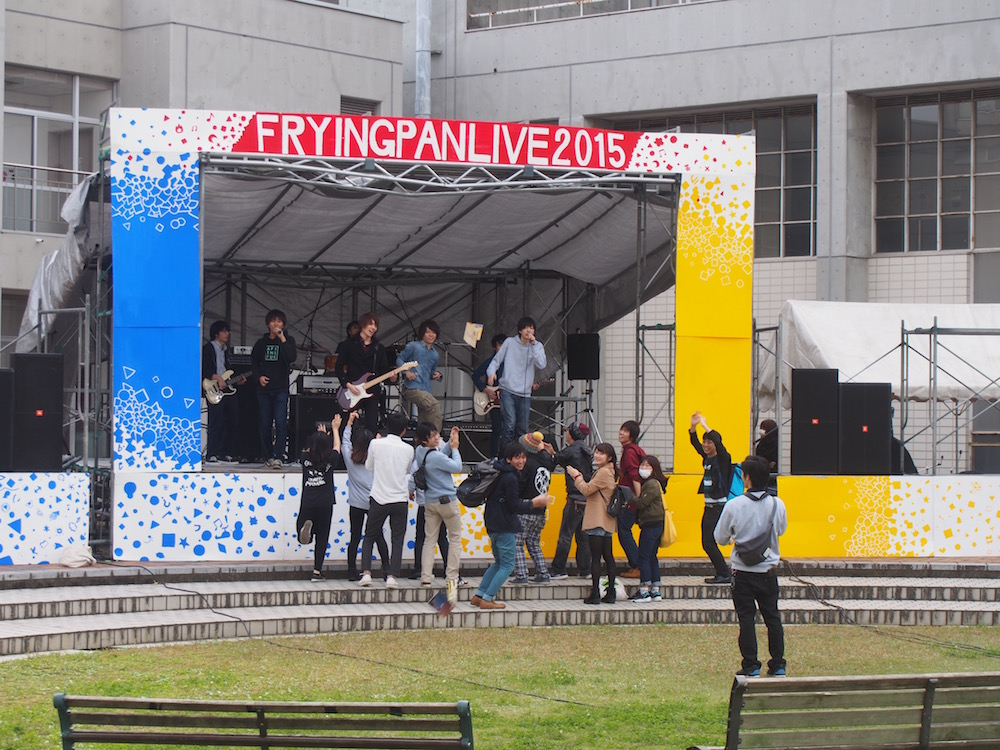
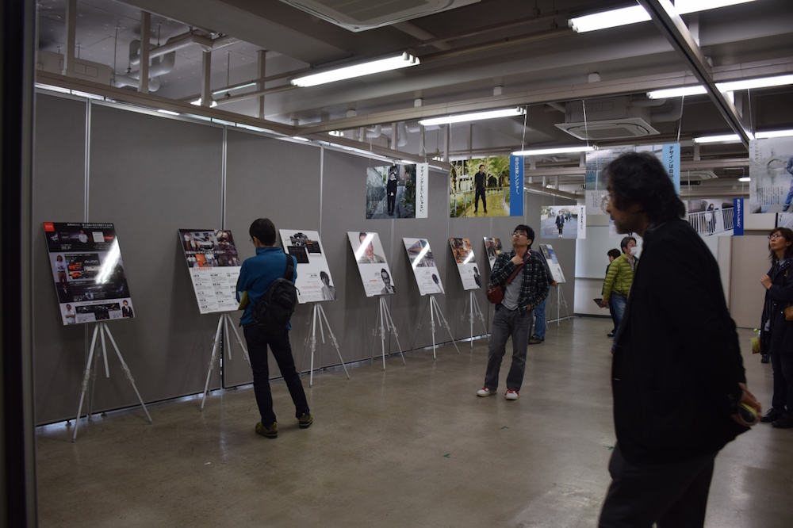
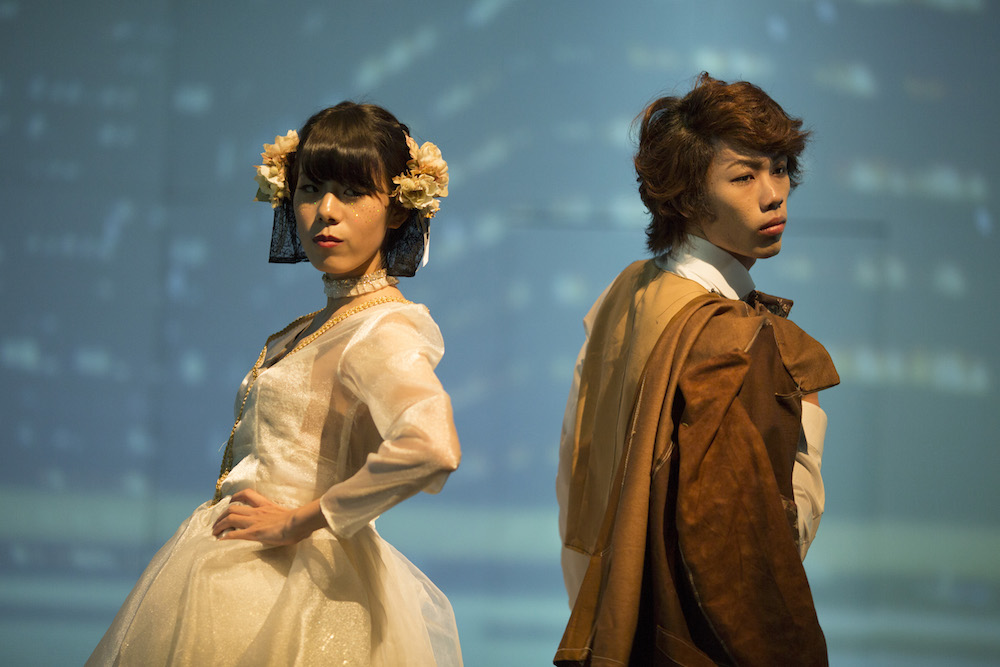
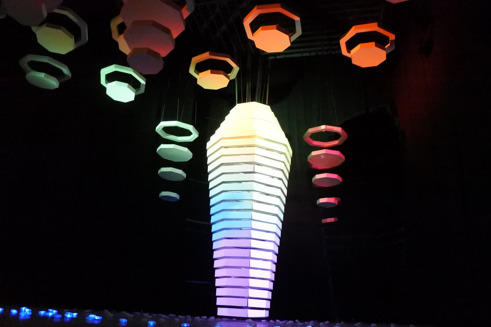
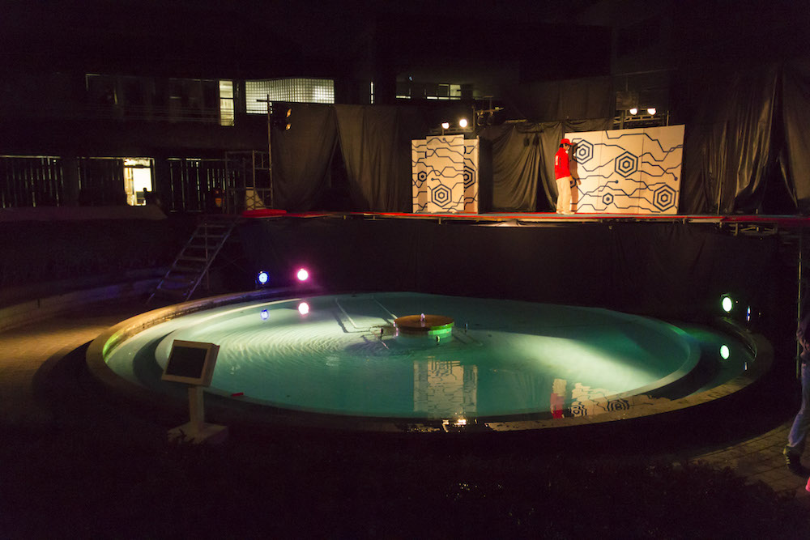
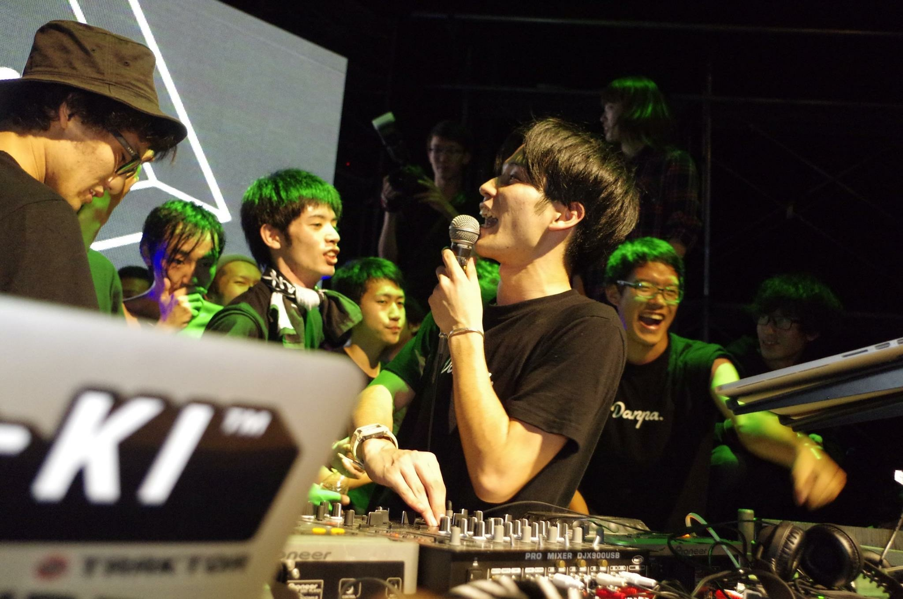
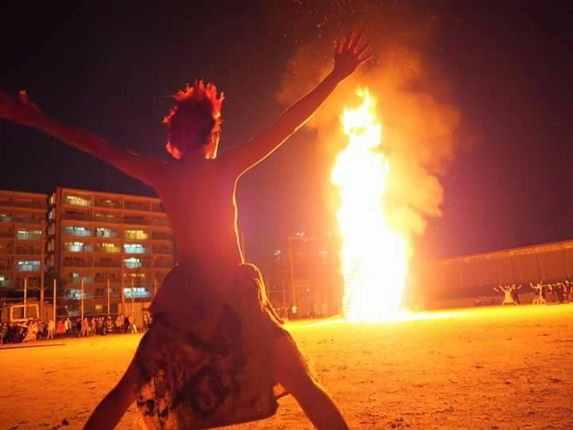
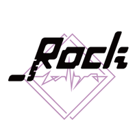
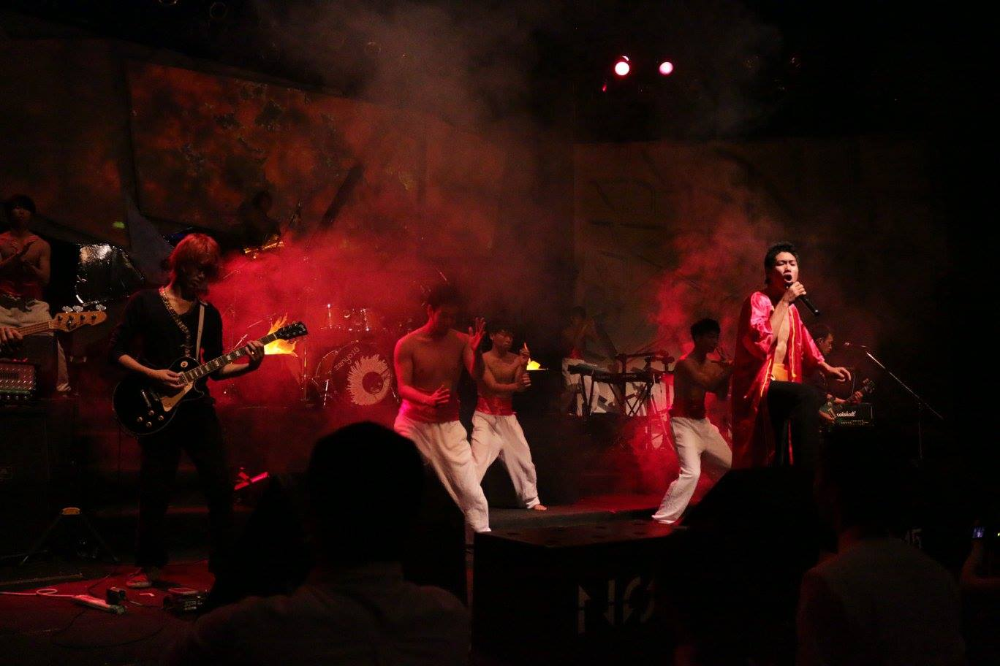

テント企画
キャンパス内に様々な模擬店を出店し、芸工祭を盛り上げます。個性とやる気に満ちあふれた出店が数多くありますので、ぜひご来場ください。
場所：大橋キャンパス構内 日時：11月19日(土曜、1日目) 10:30~21:00(ただし噴水周りは18:50まで) 11月20日(日曜、2日目) 10:00~16:00
フライパンライブ
場所：フライパン特設ステージ 日時：11月19日(土曜、1日目) 10:30~18:00 11月20日(日曜、2日目) 10:00~16:00
フライパンと呼ばれる広場にステージを設置し、ライブやダンスパフォーマンスなどを行います。
ワークショップ
簡単な工作の体験を提供しています。今年は画用紙を使ってオリジナルのしおり作りをします。 小さなお子様も一緒に楽しめる無料のイベントとなっていますので、お気軽にご来場ください。
場所：7号館 1階 ワークショップ室 日時：11月20日(日曜、2日目) 9:30~16:00
芸工紹介展
場所：5号館 日時：11月19日(土曜、1日目) 12:00~17:00 11月20日(日曜、2日目) 10:00~15:00
学生や研究室の作品及び研究成果の展示のほか、卒業生の進路紹介なども行っています。また、19日の13:00~15:00には「現役高校生向けの相談コーナー」を開設し、芸術工学部の学生が進路や学習に関する相談を受け付けます。
学祭企画
CBAproject
場所：多次元デザイン実験棟 日時：11月19日(土曜、1日目) 10:00~10:45 11:15~12:00 ※二回公演です
2研企画
「インスタレーション」と呼ばれる体験型イベントを提供する企画です。 音や照明、映像などを組み合わせた創造的な空間によって、見た人に考えるきっかけとなるような何かを「伝える」ことを目的としています。
場所:多次元デザイン実験棟 日時：11月19日(土曜、1日目) 16:30~21:00
噴水企画
大橋キャンパスの噴水の周りにステージを作り、劇、映像、音楽、照明などを用いたエンターテインメントを演出します。言葉や動きによる「笑い」をテーマとした企画で、みなさんに笑いと感動をお届けします。
場所：噴水 日時：11月19日(土曜、1日目) 19:00~21:00
 DANPA
DANPA

クラブ空間を作り上げ、映像や照明、パフォーマンスを絡めたクラブイベントを演出します。 今年のテーマ「LOUD」を最大限に表現し、観客とともに盛り上がれるようなひとときをお届けします。
場所:多次元デザイン実験棟 日時：11月20日(日曜、2日目) 15:00~18:30
火祭
芸工祭のフィナーレを飾る火祭は今年で45年目を迎えました。 火祭隊を中心に学生はもちろん一般の方々も巻き込んで巨大な火柱の周りで踊ります。 今年もみなさんで歴史を紡ぎましょう。
場所：グラウンド 日時：11月20日(日曜、2日目) 19:00~20:30
zenya
※学内向けのイベントです
芸工祭の始まる前日に、学生たちの士気を高めるためにライブパフォーマンスによる前夜祭を行います。 今年のタイトルは“_Rock”。 多次元ホール内をzenyaにしかできない最高にロックな空間に染め上げます。
※画像はすべて昨年のものです。 ※ZENYA企画は学内向けのイベントとなっています。